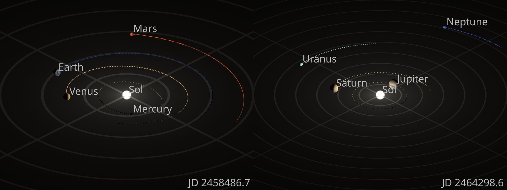
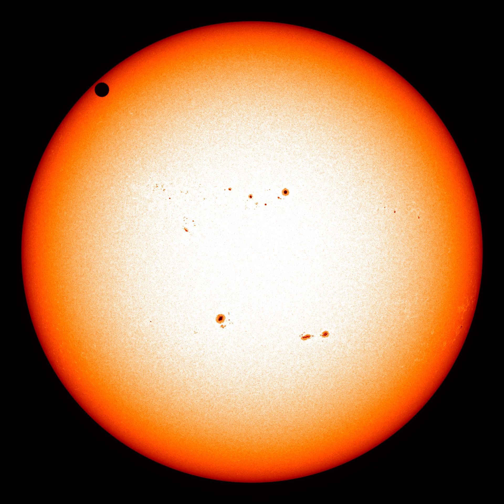
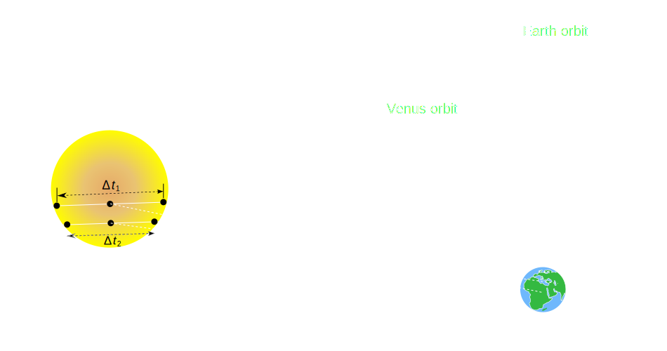
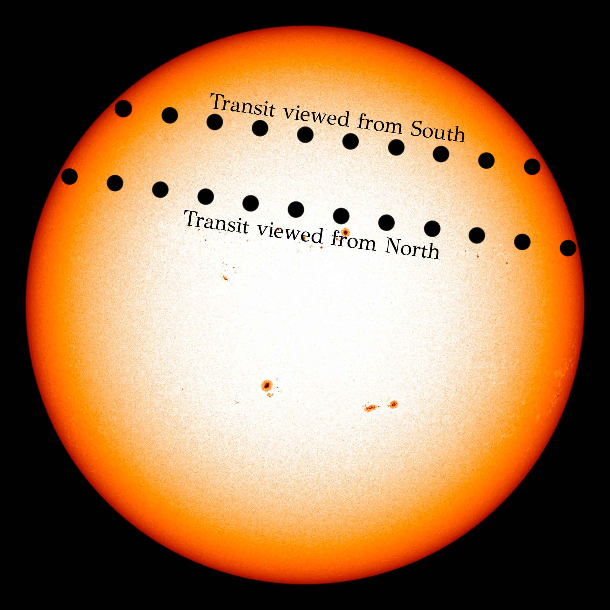
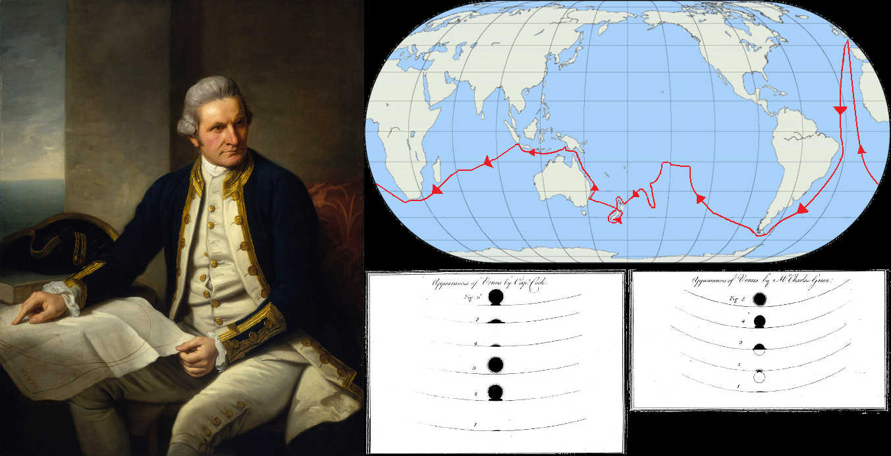
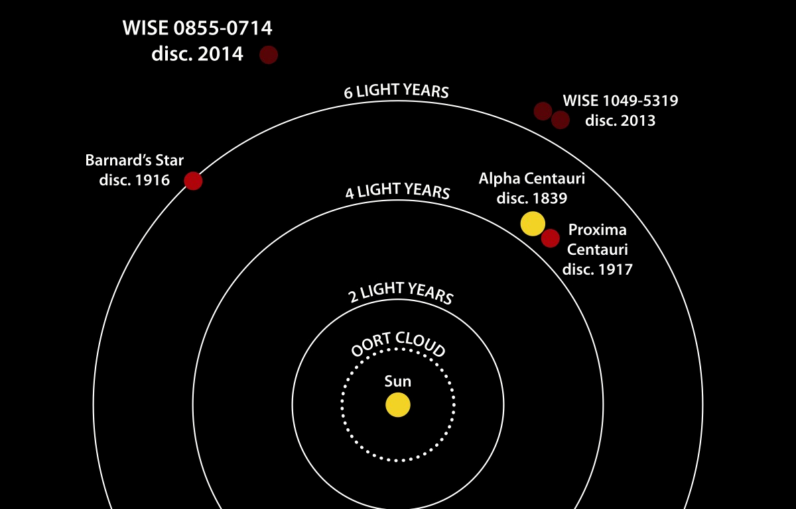
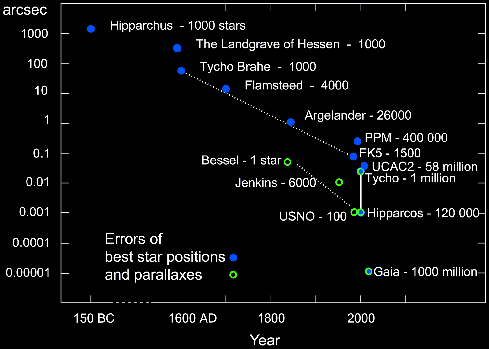
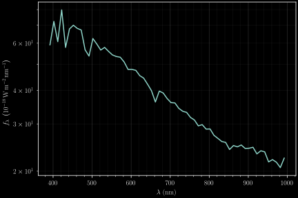

Mapping Milky Way Dust in 3D
Universitätsklinikum Heidelberg, 22 September 2023
Gregory M. Green
(Max Planck Institute for Astronomy, Heidelberg)

What does a galaxy look like?
What does a galaxy look like?
Our view of the Milky Way
An artist's impression of the Milky Way

(image credit: NASA/JPL-Caltech/ESO/Robert Hurt)
... this is also our view of the Universe.
All the light that reaches us passes through the Milky Way.
Dust affects the light of background objects.
Almost all our observations of objects in space are affected by dust.
Interstellar dust
“Love it or hate it”
Zooming in on a dust cloud in the Milky Way
Dust grains


(dust grain image credit: D. Brownlee & E. Jessberger)
A 2D map of dust
Schlegel, Finkbeiner & Davis (1998)
Interstellar Dust in 3D
Mapping dust in 3D
“Forward Modeling”
We'd like to go in this direction:
data ⟶ reality
... but this direction is easier:
model of reality ⟶ data
“Forward Modeling”
Construct a model of what we think the underlying reality is.
The model predicts what we should observe.
Adjust model so that the predicted data matches the observed data.
“Forward Modeling”
Our model of reality contains:
- Where the stars are.
- The type of each star.
- Where the dust is.
Our model predicts:
- What the stars look like.
Stars as beacons tracing the dust
Mapping dust along one sightline

Mapping dust along one sightline

Mapping dust along one sightline

Mapping dust along one sightline

Mapping dust along one sightline

Mapping dust along one sightline

Mapping dust along one sightline

Mapping dust along one sightline

Mapping dust along one sightline

Mapping dust along one sightline

Apply this method across millions of sightlines ...
“Nearby” dust (within 1300 light-years)

Farther dust (between 1300 and 3300 light-years)

Even farther dust (between 3300 and 6500 light-years)

... and even farther dust (between 6500 and 16000 light-years)

Distances to the stars
Distances
“The Sun is 150 million kilometers from Earth.”
“The Andromeda galaxy is 2.5 million light-years from Earth.”
How do we know how far away anything is?

The farthest human-made probe (Voyager 1): 0.002 light-years from Earth.
Only 0.0000001% of the way to Andromeda!
Size of the Solar System
Kepler and the Solar System
(image credit: Wikimedia / Datumizer)
Kepler and the Solar System

(image credit: Wikimedia / Dave Jarvis)
Relative distances of planets determined. Venus is 72% as far from the Sun as Earth is.
Absolute distances undetermined. How many kilometers is Venus from the Sun?
Earth-Sun Distance: The Transit of Venus
(courtesy of NASA / Solar Dynamics Observatory)
Earth-Sun Distance: The Transit of Venus
(courtesy of Wikimedia / Vermeer, Duckysmokton, Ilia)
Earth-Sun Distance: The Transit of Venus
(image credit: NASA / Solar Dynamics Observatory)
Earth-Sun distance: The transit of Venus
(map from Wikimedia / AlexiusHoratius)
Earth-Sun Distance
1 Astronomical Unit (AU) ≃ 149,597,871 kilometers
Distances to the stars
Distances to stars: stellar parallax
(image credit: Wikimedia / Srain)
1 parsec (pc) ≃ 206264 AU
≃ 3.086×1013 km
≃ 3.26 light years
Astronomers like to use parsecs.
How to practically measure parallax & proper motion?
Measuring absolute position on the sky to arcsecond precision ($\frac{1}{3600} \, \mathrm{deg}$) is difficult.
Galileo & William Herschel proposed measuring angles between "double stars" (Herschel 1826).
→ Angles between nearby stars easier to measure than absolute positions on sky.
→ The star that is closer to us will appear to move more than the more distant star.


First published parallax measurement (1838)
61 Cygni: 0.314 arcsec measured parallax
$$ \mathrm{distance} = \frac{1\,\mathrm{parsec}}{\mathrm{parallax} / \mathrm{arcsec}} = 3.2\,\mathrm{parsec} $$
(correct value: 0.286 arcsec, 3.5 parsec)
The Gaia mission
Gaia
Accuracy over time
Gaia's range

Statistical aside: Inferring distance from parallax
In a perfect world, $\frac{\mathrm{distance}}{1\,\mathrm{pc}} = \frac{1\,\mathrm{arcsec}}{\mathrm{parallax}}$.
In the real world, we don't measure parallax exactly (measurement errors).
The best we can do is to infer the distance to the star probabilistically:
$$ p(\mathrm{distance} \mid \mathrm{parallax}) $$
We want $ p(\mathrm{\color{cyan}{distance}} \mid \mathrm{\color{orange}{parallax}}) $.
Going from model (distance) to data (parallax) is easier: $$ \require{xcolor} p(\mathrm{\color{orange}{parallax}} \mid \mathrm{\color{cyan}{distance}}) $$
We just have to understand our instrumental errors.
Bayes' Theorem:
$$ \require{xcolor} p(\mathrm{\color{cyan}{distance}} \mid \mathrm{\color{orange}{parallax}}) = \frac{ p(\mathrm{\color{orange}{parallax}} \mid \mathrm{\color{cyan}{distance}}) \, p(\mathrm{\color{cyan}{distance}}) }{ p(\mathrm{\color{orange}{parallax}}) } $$
We need a prior model of the spatial distribution of stars: $p(\mathrm{\color{cyan}{distance}})$.
Priors
What do we expect before we collect any data?
In our case: How are stars and dust distributed throughout the Milky Way?
What if parallax is too small to measure?

{kind=link}
{kind=link}
Using our knowledge of the distances to stars, we can learn about their properties.
Herzsprung-Russell Diagram: stellar temperature vs. luminosity
Types of stars: main-sequence stars, giants, white dwarfs, ...
Spectroscopy
Flux (amount of light) as a function of wavelength
Spectra carry information about the stellar properties: temperature, chemical composition, ...
This may look like measurement noise, but it isn't!
Ab initio spectral models of stellar spectra are getting really good:
Begin with a few numbers (temperature, chemical composition, surface gravity, ...), and predict thousands of spectral lines.
Typical spectra of stars of different temperatures
Largest spectroscopic survey to date: LAMOST
10 million stellar spectra
Gaia “BP/RP” spectrophotometry
(“XP spectra”)

Example XP spectra

Example XP spectra
Example XP spectra

Comparison with LAMOST
- 20× as many stars
- 1/20th the wavelength resolution
- All-sky: Great for mapping dust!
Model of a single star obscured by dust

Model of a single star obscured by dust
Model vs. Observations

Extinction in 3D
All-sky results from Gaia XP spectra